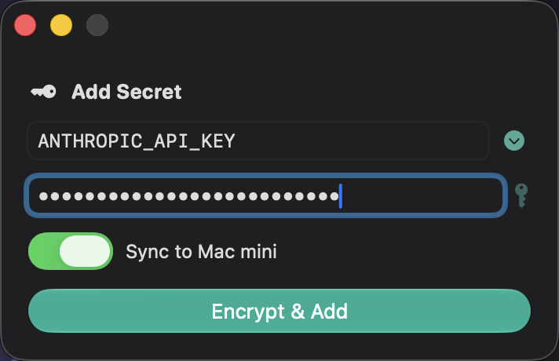
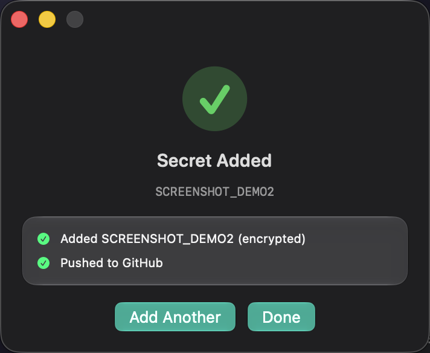

The trap
“Just paste the key in chat” is a leak with a friendly face.
Every agent workflow eventually hits the same wall. The agent is wiring up a new API, it needs a token, and only you can get one. The path of least resistance is to paste it into the conversation and let the agent take it from there.
That works. It also copies the secret into the one place designed to remember everything. A transcript is logged, summarized, replayed into the next context window, and shipped to a model provider. The key rides along in all of it.
The alternatives people reach for next are not better; they just fail somewhere less visible.
Captured in the transcript. Logs, summaries, provider-side retention, and every future turn that quotes it back.
Visible in ps. Any user on the box can read the full command line of a running process, and child processes inherit it.
Lands in shell history. export KEY=… sits in ~/.zsh_history in plaintext, essentially forever.
Plaintext on disk. Backups, Spotlight indexes, and one absent-minded git add ..
The common thread is not carelessness. It is that in all four cases the secret became a string some other program handled on its way to storage — and every one of those programs keeps records.
Invert the handoff
Let the agent run the errand. Keep the value out of its hands.
The fix is a split of labor, not a new crypto scheme. The agent is genuinely good at the boring parts: knowing which key is needed, launching something, waiting, reading an outcome, and continuing. The only step it must never perform is holding the value.
So the value gets a lane of its own. A human types it into a native macOS SecureField. It goes straight from that field into sops as standard input, and comes back out as ciphertext. It is never interpolated into a command, never written to a temp file, never returned to the caller.


The whole app is about 480 lines of SwiftUI, built by a single swiftc invocation — no Xcode project, no target settings, just ./build.sh hand-assembling the bundle and symlinking it into /Applications. That mattered more than it sounds: a tool this small only survives if rebuilding it is a non-event.
The load-bearing line is unglamorous. It is the one that chooses stdin over an argument:
Same idea in Python, if you want to try this without writing any Swift — input= is the safe channel, an f-string in the argument list is not:
The division of labor: the agent decides that a secret is needed and what to call it. A human decides what it is. Neither one has to trust the other with the part they shouldn't have.
Where it lands
Encrypted in git, with the key names left readable on purpose.
The destination is ~/dotfiles/secrets.env — a dotenv file committed to a private repo, encrypted with sops and age. sops encrypts the values and leaves the keys in the clear, which is what makes the file reviewable:
You can read a diff and see which key changed without any value ever appearing. One age private key at ~/.config/sops/age/keys.txt decrypts the whole file; it is chmod 600 and it is the one thing that is never committed. Clone the repo, drop the key in place, and the machine is provisioned.
Each CLI wrapper then decrypts for itself, with no shell profile and no interactive unlock in the path:
The conspicuous absence here is the macOS Keychain. I tried it first and it cost me a weekend. The Keychain is fine when a human is logged in and looking at the screen; it fails in exactly the environments agents live in — non-interactive shells, cron, SSH, launchd jobs — and one flavor of failure silently wipes the stored credentials rather than reporting an error. A file on disk, guarded by permissions, is less clever and dramatically more reliable.
The agent protocol
Block on the human. Then read a file that has no secret in it.
The interface between agent and app is two commands. The first launches the GUI with the key name pre-filled and waits:
-W is the important flag: it blocks until the window closes. The app is wired to quit when its last window closes, whether the human clicks Done or just hits ⌘W, so the call always returns. The agent parks on one blocking Bash call while a human does the one private part, then continues.
The second command reads the outcome:
Key name, timestamp, and a per-step checklist. No value, by construction — the result writer is a separate function that never receives one.
The detail I like most is the third status. The app writes pending to the file the moment the window appears, before the human does anything:
steps[] says which one and why.Without pending, a cancelled dialog is indistinguishable from a stale success from last Tuesday — and an agent that can't tell those apart will confidently proceed with a key that was never added. It cost one line at launch to make the difference legible.
The general rule: a tool an agent drives should report its outcome in a file the agent can read without parsing prose — and should distinguish “didn't happen” from “happened a while ago.”
On success the app also fans out: commit the ciphertext, push to GitHub, then ssh into both Mac mini accounts and git pull --ff-only. Each remote pull becomes its own line in steps[], so a machine that was asleep shows up as a failed step rather than a silent gap.
The Python part
Encrypting the file was the easy half. Merging it nearly ate a key.
Here is the bug that turned a weekend toy into something with tests. sops re-nonces every value on every write. Change one key and every line of the ciphertext changes. Git has no line-level correspondence left to merge, so any two concurrent edits — laptop and Mac mini, ten minutes apart — arrive as a whole-file conflict.
And a whole-file conflict has an obvious, disastrous resolution: pick a side. Whichever side you pick, the other machine's newly-added key is gone. Worse, the deletion is invisible. The diff shows 45 changed lines either way, because the diff always shows 45 changed lines. There is nothing to notice.
The answer is two small Python programs sitting under the Swift app — which is why this is a Python-meetup story wearing a Swift jacket.
The first is a git merge driver registered for that one path. Git hands it the ancestor, ours, theirs, and a path; it decrypts all three, merges at the key level on plaintext, and re-encrypts the result. Disjoint edits from two machines both survive, because they were never really in conflict — only their ciphertext was.
Same-key collisions need a tiebreak, and the honest one is wall-clock time: the value typed most recently is the one the human meant. But git hands the driver two blobs and no timestamps. My first two attempts to recover a date were both wrong in instructive ways.
Reading REBASE_HEAD / CHERRY_PICK_HEAD.
Git writes those refs only once an operation stops. During a clean driver run — the normal case — neither exists. The dating code silently fell through to a guess.
Guessing that “the side being applied” is newer.
It isn't. A stale unpushed commit that sat on the laptop for three days beats a fresh value from the mini purely by virtue of being replayed — and then the sync fans the older secret out to a machine that was working fine.
The fix is to date the content, not the operation: hash each side's blob and ask git when that exact content first landed in any commit. That answer is identical under merge, rebase, cherry-pick, and revert, because it never asks what git is currently doing.
The second program is the belt to the merge driver's braces. secrets-verify compares the key set of the local file against origin/main and refuses a push that would drop a key the remote still has. Deleting a secret on purpose is a flag away; deleting one by accident is now impossible to do quietly.
secrets-verify fails the push if any remote key went missing.result.json as its own pass/fail line.The app now does the first and last of those itself: it pulls before it decrypts, because the decrypt-modify-re-encrypt cycle rewrites the entire file and starting from a stale base is precisely how the other machine's key disappears. And a rejected push triggers a pull, a re-verify, and a retry — with the merge driver doing the actual reconciliation underneath.
Why it's Python: the GUI had to be native to get a real SecureField, but the correctness machinery is text processing, subprocess orchestration, and git plumbing. Two files, ~330 lines, no dependencies. That is a language choice that pays back the first time you have to reason about it at midnight.
Failure diary
Everything sharp in this design is scar tissue.
None of the safeguards above were designed in. Each one is the residue of something that broke, usually in a way that was quiet at the time.
The Keychain wiped the credentials.
The first credential store was the macOS Keychain. In agent shells it failed to decrypt — and one failure mode cleared what it was holding. Every wrapper is file-backed now, and “no Keychain” is written down as policy rather than folklore.
A whole-file ciphertext conflict resolved by picking a side.
The original failure. It is invisible in review, which is what makes it dangerous: the diff looks the same whether you kept both keys or destroyed one.
The driver's date lookup silently returned nothing.
REBASE_HEAD only exists once a rebase has stopped, so during a clean run the code fell through to a guess. Caught on 2026-07-25 — along with a cherry-pick that took the same fallback and kept the older value.
A stale local base overwrote a fresh remote key.
Typing into the dialog takes thirty seconds; the other machine can push during them. Pulling before the decrypt closed the window, and the rebase-retry loop closed what was left of it.
An agent couldn't tell “cancelled” from “finished earlier.”
Before the pending status was written at launch, a stale success from a previous run read as a fresh one. The agent proceeded with a key that had never been entered.
There is a pattern in that list. Four of the five were silent — the system reported success while doing the wrong thing. Almost all the engineering effort since went into converting silent wrong answers into loud ones.
The threat model
This defends against the transcript. It does not defend against a hostile agent.
Worth being precise about, because “the agent never sees the secret” is easy to over-read. The agent runs on my machine with my shell. It can run sops -d. If an agent were actively malicious, none of this would stop it.
What this design actually buys is that the secret never becomes a value in a record that gets kept — not in a transcript shipped to a provider, not in ps, not in shell history, not in a backup. That is the failure mode that happens by accident, on an ordinary Tuesday, to careful people. The deliberate-attacker case is a different problem with a different answer.
The value entering the transcript, argv, or plaintext on disk
The reason the tool exists. SecureField → stdin → ciphertext, with no intermediate representation anything else can capture.
Losing a key to a merge
Key-level merge driver, content-dated collision resolution, and a key-set guard that fails the push. Deletions must be explicit.
An unsynced machine or a failed push
Loud and recoverable: it shows up as a failed step in result.json, and re-running fixes it.
The age key on disk, the ad-hoc signature, and a decrypting agent
The private key is a chmod-600 file with no passphrase — that is what makes it work unattended, and it is the tradeoff. The app is ad-hoc signed, so nothing proves the /Applications bundle is mine. And any process running as me can decrypt the file. Known, not solved.
If I pushed further, the next steps are a hardware-backed age identity, a real Developer ID signature so the dialog is attestable, and per-tool scoping so a wrapper can only decrypt the keys it needs. None of those are hard; none of them are the current bottleneck.
Steal the pattern
The shape matters more than any of the parts.
Nothing here is specific to Swift, or to macOS, or even to secrets. It is a general answer to a question that keeps coming up as agents get more autonomous: how do you let an agent complete a task that requires something the agent must not have?
The answer has four moving pieces, and you can build all of them in an afternoon in any language:
In Python that is getpass.getpass() or a twenty-line Tkinter window, subprocess.run(..., input=value), and json.dump to a 0600 file. The Swift app exists because I wanted a real SecureField and a Dock icon, not because the pattern needs a compiled language.
What the agent gained
It can provision a brand-new API integration end to end, including the credential step, without a human doing anything but typing once.
What the agent never got
The value. Not in its context, not in its logs, not in any process it can inspect.
What I'd tell the meetup: the interesting question about agent safety usually isn't “can I trust the model?” It's “what does the workflow record, and who eventually reads that?” Design for the record, and most of the scary parts get boring.
Source: github.com/malpern/add-secret — AddSecret.swift, build.sh, makeicon.swift. The encrypted secrets.env, the merge driver, and the verifier live in a separate private dotfiles repo. Build it with ./build.sh; there is no Xcode project to open.